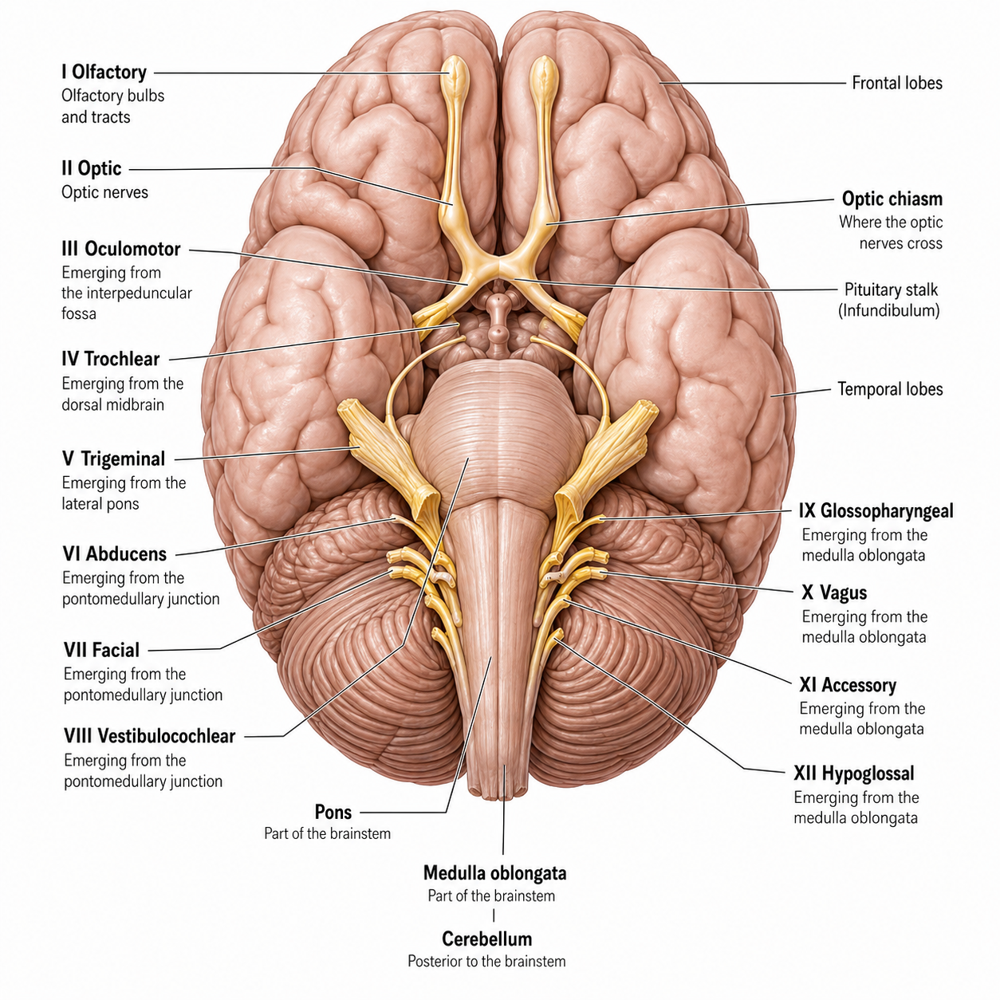

The 12 Cranial Nerves (I–XII)
Click a Cranial Nerve
I · Olfactory NerveSensory
Carries the sense of smell from receptors in the nose to the brain. Sensory only; arises from the forebrain.
Reference — The 12 Cranial Nerves

Cranial nerves emerge in numbered order from front to back along the base of the brain and brain stem. Nerves I–II arise from the forebrain; III–XII from the brain stem.
Classifying the Cranial Nerves
3 Sensory · 5 Motor · 4 Mixed
Sensory Only
3I Olfactory (smell) · II Optic (vision) · VIII Vestibulocochlear (hearing & balance). These carry information into the brain only.
Motor Only
5III Oculomotor · IV Trochlear · VI Abducens (all move the eye) · XI Accessory (neck) · XII Hypoglossal (tongue). These carry commands out to muscles.
Mixed
4V Trigeminal · VII Facial · IX Glossopharyngeal · X Vagus. These carry both sensory and motor fibers.
Type mnemonic — "Some Say Marry Money But My Brother Says Big Brains Matter More." Reading I → XII, each first letter gives the type: S = Sensory, M = Motor, B = Both (mixed). So I-S, II-S, III-M, IV-M, V-B, VI-M, VII-B, VIII-S, IX-B, X-B, XI-M, XII-M.
Remembering the Names in Order
Name Mnemonic — "Oh, Oh, Oh, To Touch And Feel Very Good Velvet, AH!"
OhI — Olfactory
OhII — Optic
OhIII — Oculomotor
ToIV — Trochlear
TouchV — Trigeminal
AndVI — Abducens
FeelVII — Facial
VeryVIII — Vestibulocochlear
GoodIX — Glossopharyngeal
VelvetX — Vagus
AhXI — Accessory
(H)XII — Hypoglossal
Quick recall: There are 12 pairs. The three purely sensory nerves are the "special-sense" ones (smell, sight, hearing/balance). Five purely motor nerves mostly move things (eye ×3, neck, tongue). The four mixed nerves (V, VII, IX, X) each do sensing and moving — remember the Vagus (X) as the far-reaching one that runs your internal organs.